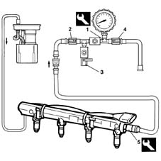

0510C10 fuel system - check delivery pressure
- Path
- Procedures > 05 DIAGNOSTICS > 0510 VARIOUS CONTROLS > 0510C check systems > 0510C10 fuel system - check delivery pressure
- Kind
- repair procedure (removal / refitting; the operation number is the code)
- Applies to
- engines: 1.6 16v; all production periods
- Interactive page
- https://sloeber94.github.io/elrnDB-fMltpl/en/#/2891169
Applies to: engines: 1.6 16v; all production periods
Disconnect the electrical connection of the fuel injector supply flange (refer to Op. 1056B61 single fuel manifold with injectors - r+r with air conveyor/box removed ).
 | Name | Connector |
|---|---|---|
- | Injector |
1. Set up the test equipment as described in points 2, 3 and 4 below.
 | Name | Country |
|---|---|---|
1 | Pressure gauge | 1.860.955.000 |
2. Open the cock.
3. Close the cock.
4. Close the cock.
5. Position the test equipment and connect it to the fuel manifold's bleed valve by means of the specific adaptor.
| Name | Country |
|---|---|---|
5 | Rapid connector | 1.870.684.000 |

Applies to: engines: 1.6 16v; all production periods
Reconnect the electrical connection of the fuel injector supply flange (refer to Op. 1056B61 single fuel manifold with injectors - r+r with air conveyor/box removed ).
| Name | Connector |
|---|---|---|
- | Injector |
Start the engine and check that the pressure gauge's reading is within the specified limits.
 | Measurement | Value | |
|---|---|---|---|
- | Fuel pressure (bar) | 2.8 - 3.2 |
Turn off the engine.
Operate the fuel pump by means of the "Active Diagnosis" of the diagnostic equipment and measure an increase in pressure up to 4 bar. Do not allow the pressure to exceed this value.
Disconnect the test equipment and specific adaptor from the fuel manifold bleed valve.
| Name | Country |
|---|---|---|
- | Pressure gauge | 1.860.955.000 |
| Name | Country |
|---|---|---|
- | Rapid connector | 1.870.684.000 |